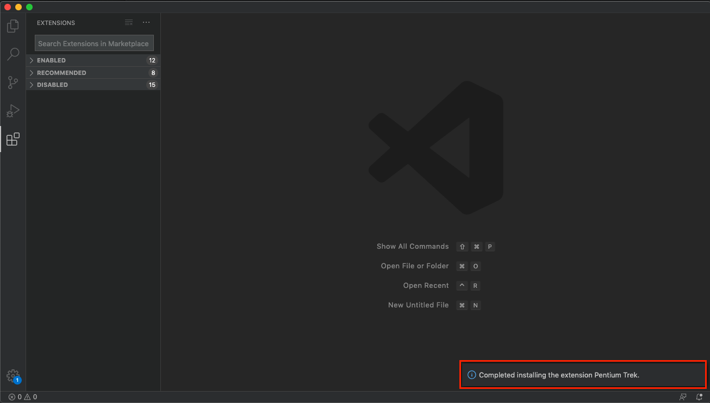

Before you begin¶
請先安裝 trek cli tool，如何安裝 可參考。
以下會經常用到快捷鍵 Ctrl+Shit+P ( or ⌘+⇧+P ) 呼叫出 Command Palette 並執行 trek vscode extension 指令，Trek 相關指令都以「Trek: XXX」方式命名。
本機必需要有啟動中的 docker。
Installing trek vscode extension¶
請先準備好 Pentium trek vscode extension 的 vsix 安裝檔。
請使用以下任一方式安裝：
安裝方式 1.
打開 vscode，點選左側 Extension，點選右上角「...」，選擇 「Install from VSIX...」後，選擇 trek vsix 安裝檔：

安裝方式 2.
叫出 Command Palette，選擇「Extension: Install from VSIX」後，選擇 trek vsix 安裝檔。
成功安裝後，右下角會出現「Completed installing the extension Pentium Trek.」提示訊息。
叫出 Command Palette，輸入 trek 顯示多項 trek 指令，即表示安裝完成。
Configuring trek vscode extension¶
在使用 trek vscode extension 之前，請先指定已安裝 trek cli 的位置，若是安裝於 global (非虛擬環境)，可不用特別設定。
開啟 vscode 設定檔，尋找 Extensions 下的 Pentium Trek，並設定 trek cli 位置，如: /User/pentium/trek/env_trek/bin/trek。